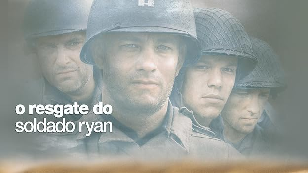
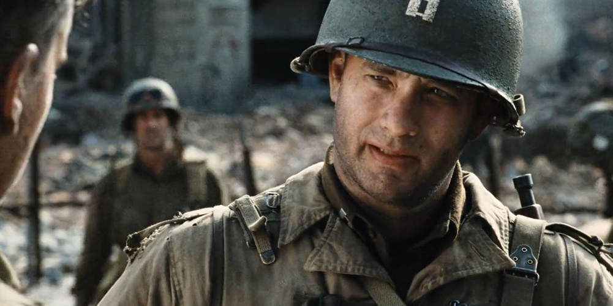
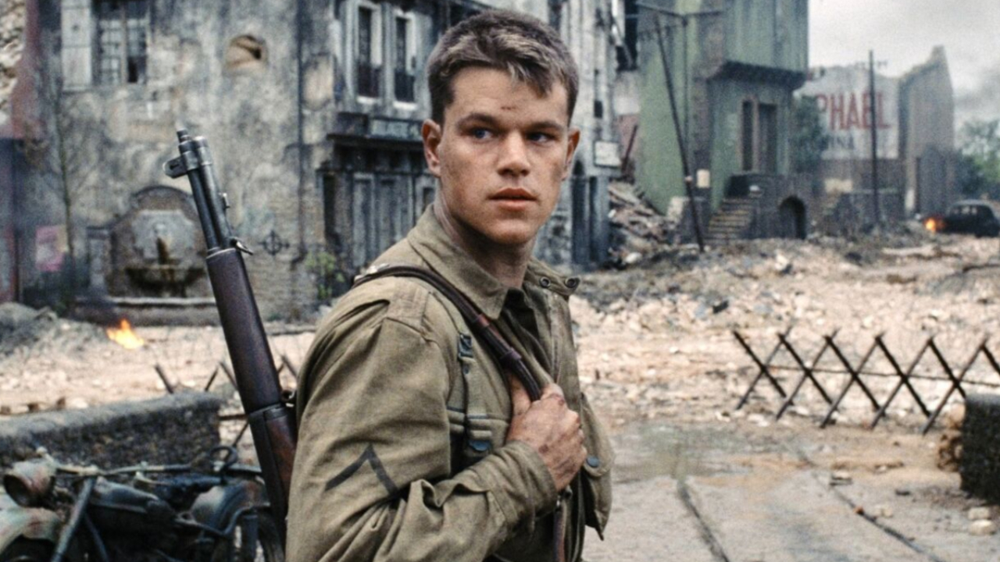
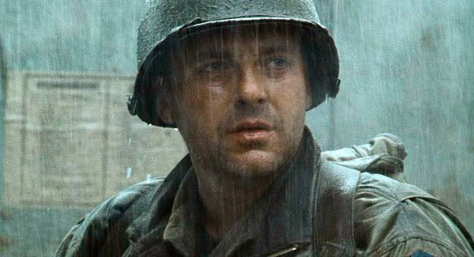
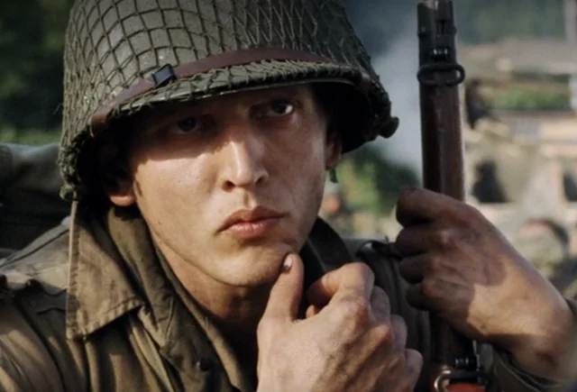
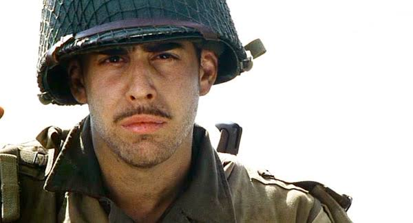
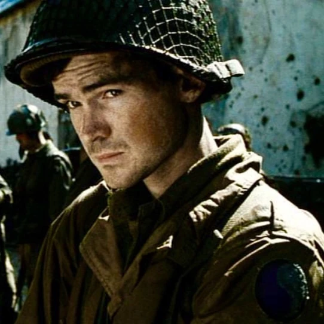

Após o brutal desembarque na Normandia, um grupo de soldados americanos recebe a missão de penetrar em território inimigo para resgatar o único sobrevivente de quatro irmãos combatentes.
Em 6 de junho de 1944, no Dia D, forças aliadas desembarcam na praia de Omaha. O Capitão John Miller lidera seus homens através do inferno de fogo e consegue ultrapassar as defesas alemãs.
Logo após a batalha, o comando militar descobre que três irmãos da família Ryan morreram na guerra em um curto intervalo de tempo. Para evitar que uma mãe perca todos os seus filhos, o exército ordena uma busca pelo quarto irmão, o Soldado James Ryan, perdido em algum lugar na França ocupada.
Miller reúne um pequeno pelotão e parte em uma jornada de auto-sacrifício e dilemas morais, questionando o valor de arriscar a vida de oito homens para salvar apenas um.







Os atores passaram por um rigoroso treinamento militar de vários dias no mato para sentirem o cansaço real. Matt Damon foi dispensado de propósito para gerar um ressentimento genuíno do grupo contra ele no filme.
A famosa sequência inicial da praia de Omaha custou cerca de 12 milhões de dólares, envolveu mais de 1.500 figurantes e demorou quatro semanas para ser filmada.
O nível de realismo do áudio e dos efeitos visuais da batalha inicial foi tão alto que causou crises de ansiedade e estresse pós-traumático em veteranos reais que assistiram à estreia.